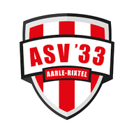

TESTAPP · nepdata · geen koppeling met Firebase

Hoi
Paul
JO12-1
O12 · 8 tegen 8
Alles in de hub
Testbediening
Spring naar een moment
Eigen tijdstip
Echte tijd
Waar ben je
Op de club
Elders
Onbekend
Echte GPS:
uit
Wedstrijd en weergave
Zaterdag: uit
Opstelling gedeeld
Wissel thema